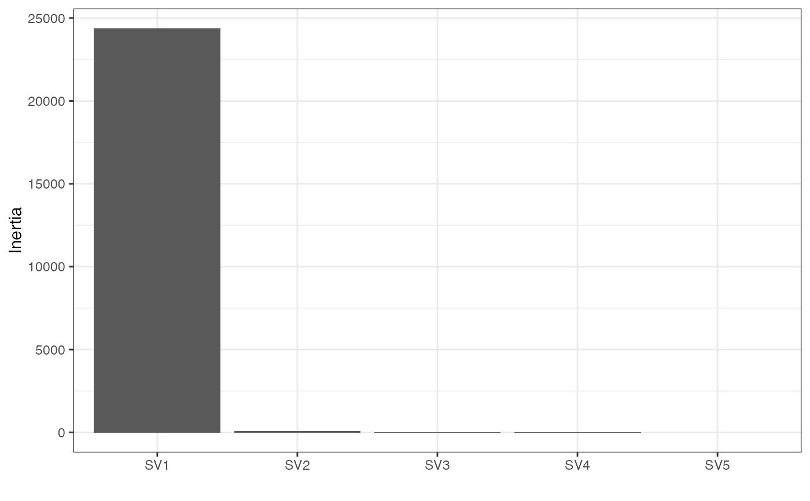
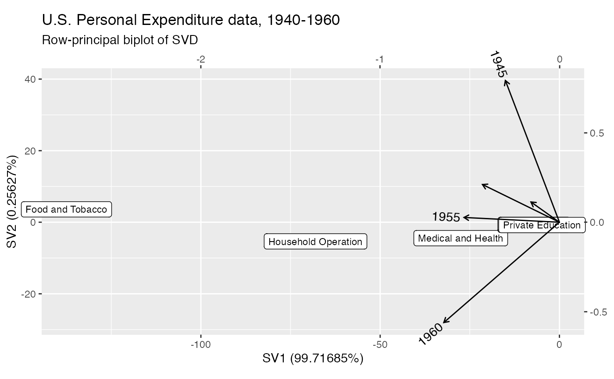

methods-svd.RdThese methods extract data from, and attribute new data to,
objects of class "svd_ord" returned by svd_ord().
# S3 method for svd_ord as_tbl_ord(x) # S3 method for svd_ord recover_rows(x) # S3 method for svd_ord recover_cols(x) # S3 method for svd_ord recover_inertia(x) # S3 method for svd_ord recover_coord(x) # S3 method for svd_ord recover_conference(x) # S3 method for svd_ord augmentation_rows(x) # S3 method for svd_ord augmentation_cols(x) # S3 method for svd_ord augmentation_coord(x)
| x | An ordination object. |
|---|
#> [1] "matrix" "array"#> 1940 1945 1950 1955 1960 #> Food and Tobacco 22.200 44.500 59.60 73.2 86.80 #> Household Operation 10.500 15.500 29.00 36.5 46.20 #> Medical and Health 3.530 5.760 9.71 14.0 21.10 #> Personal Care 1.040 1.980 2.45 3.4 5.40 #> Private Education 0.341 0.974 1.80 2.6 3.64# singular value decomposition into row and column coordinates USPersonalExpenditure %>% svd_ord() %>% as_tbl_ord() %>% print() -> spend_svd#> # A tbl_ord of class 'svd_ord': (5 x 5) x (5 x 5)' #> # 5 coordinates: SV1, SV2, ..., SV5 #> # #> # Rows (standard): [ 5 x 5 | 0 ] #> SV1 SV2 SV3 ... | #> | #> 1 -0.881 0.456 -0.122 | #> 2 -0.436 -0.677 0.583 ... | #> 3 -0.176 -0.562 -0.734 | #> 4 -0.0455 -0.0929 -0.314 | #> 5 -0.0311 -0.0989 -0.0892 | #> # #> # Columns (standard): [ 5 x 5 | 0 ] #> SV1 SV2 SV3 ... | #> | #> 1 -0.159 0.113 0.182 | #> 2 -0.302 0.792 -0.527 ... | #> 3 -0.429 0.211 0.620 | #> 4 -0.532 0.0266 0.302 | #> 5 -0.645 -0.561 -0.461 |#> # A tibble: 1 x 5 #> rank n.row n.col inertia class #> <int> <int> <int> <dbl> <chr> #> 1 5 5 5 24433. svd_ord#> SV1 SV2 SV3 SV4 SV5 #> Food and Tobacco -0.88086766 0.45563080 -0.12237718 0.02450591 -0.02993361 #> Household Operation -0.43580483 -0.67662102 0.58341818 -0.07630369 0.07784028 #> Medical and Health -0.17637018 -0.56230756 -0.73372346 0.04111351 -0.33565360 #> Personal Care -0.04553400 -0.09285599 -0.31360568 -0.49361448 0.80454996 #> Private Education -0.03108899 -0.09885616 -0.08915387 0.86500383 0.48278452#> SV1 SV2 SV3 SV4 SV5 #> 1940 -0.1589586 0.11313761 0.1824780 -0.89728506 -0.35144462 #> 1945 -0.3016855 0.79223017 -0.5274149 0.02654943 0.04985844 #> 1950 -0.4293572 0.21081041 0.6202698 -0.01464040 0.62150007 #> 1955 -0.5323309 0.02659741 0.3024320 0.42107353 -0.66869157 #> 1960 -0.6449761 -0.56073415 -0.4607988 -0.12906349 0.20146975#> # A tbl_ord of class 'svd_ord': (5 x 5) x (5 x 5)' #> # 5 coordinates: SV1, SV2, ..., SV5 #> # #> # Rows (standard): [ 5 x 5 | 1 ] #> SV1 SV2 SV3 ... | .name #> | <chr> #> 1 -0.881 0.456 -0.122 | 1 Food and Tobacco #> 2 -0.436 -0.677 0.583 ... | 2 Household Operation #> 3 -0.176 -0.562 -0.734 | 3 Medical and Health #> 4 -0.0455 -0.0929 -0.314 | 4 Personal Care #> 5 -0.0311 -0.0989 -0.0892 | 5 Private Education #> # #> # Columns (standard): [ 5 x 5 | 1 ] #> SV1 SV2 SV3 ... | .name #> | <chr> #> 1 -0.159 0.113 0.182 | 1 1940 #> 2 -0.302 0.792 -0.527 ... | 2 1945 #> 3 -0.429 0.211 0.620 | 3 1950 #> 4 -0.532 0.0266 0.302 | 4 1955 #> 5 -0.645 -0.561 -0.461 | 5 1960#> # A tibble: 5 x 4 #> .name .value .inertia .prop_var #> <fct> <dbl> <dbl> <dbl> #> 1 SV1 156. 24364. 0.997 #> 2 SV2 7.91 62.6 0.00256 #> 3 SV3 2.53 6.42 0.000263 #> 4 SV4 0.368 0.136 0.00000555 #> 5 SV5 0.0874 0.00763 0.000000312# fortification of coordinates yields proportion of variance fortify(spend_svd, .matrix = "coord")#> # A tibble: 5 x 4 #> .name .value .inertia .prop_var #> <fct> <dbl> <dbl> <dbl> #> 1 SV1 156. 24364. 0.997 #> 2 SV2 7.91 62.6 0.00256 #> 3 SV3 2.53 6.42 0.000263 #> 4 SV4 0.368 0.136 0.00000555 #> 5 SV5 0.0874 0.00763 0.000000312# scree plot of inertia ggplot(spend_svd, .matrix = "coord", aes(x = .name, y = .inertia)) + theme_bw() + geom_col() + labs(x = "", y = "Inertia")# fortification automatically augments coordinates fortify(spend_svd)#> # A tibble: 10 x 7 #> SV1 SV2 SV3 SV4 SV5 .name .matrix #> <dbl> <dbl> <dbl> <dbl> <dbl> <chr> <chr> #> 1 -0.881 0.456 -0.122 0.0245 -0.0299 Food and Tobacco rows #> 2 -0.436 -0.677 0.583 -0.0763 0.0778 Household Operation rows #> 3 -0.176 -0.562 -0.734 0.0411 -0.336 Medical and Health rows #> 4 -0.0455 -0.0929 -0.314 -0.494 0.805 Personal Care rows #> 5 -0.0311 -0.0989 -0.0892 0.865 0.483 Private Education rows #> 6 -0.159 0.113 0.182 -0.897 -0.351 1940 cols #> 7 -0.302 0.792 -0.527 0.0265 0.0499 1945 cols #> 8 -0.429 0.211 0.620 -0.0146 0.622 1950 cols #> 9 -0.532 0.0266 0.302 0.421 -0.669 1955 cols #> 10 -0.645 -0.561 -0.461 -0.129 0.201 1960 cols#> [1] 0 0# row-principal biplot, allowing radiating text to exceed plotting window spend_svd %>% confer_inertia(1) %>% ggbiplot(aes(label = .name), clip = "off", sec.axes = "cols", scale.factor = 50) + geom_rows_label(size = 3) + geom_cols_vector() + # omit labels in the hull with the origin geom_cols_text_radiate(stat = "cone") + ggtitle( "U.S. Personal Expenditure data, 1940-1960", "Row-principal biplot of SVD" )